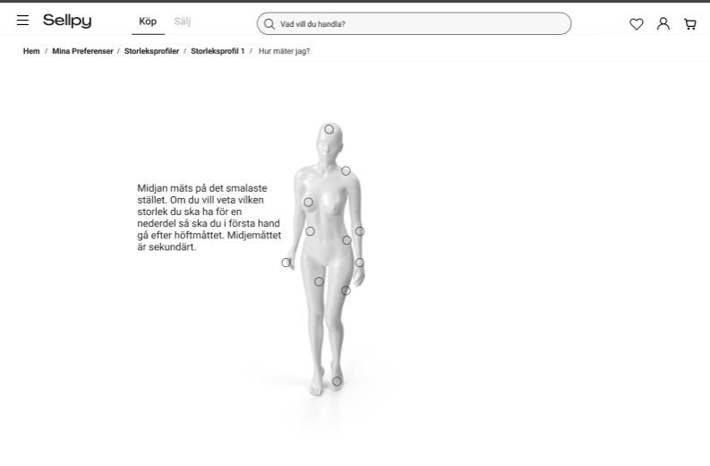
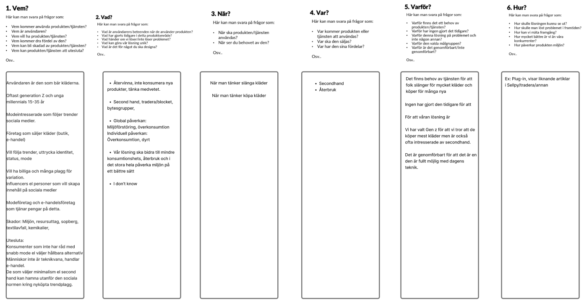
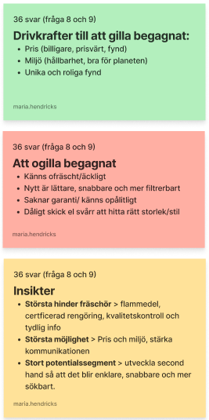
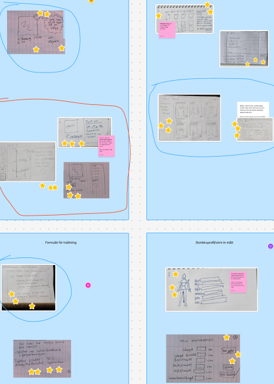

Sellpy: Exploring More Confident Second-hand Shopping
A five-week UX course project exploring what makes buying and selling second-hand clothing feel easier and more trustworthy.
UX/UI designer
UX course project
Sellpy
Figma
5 weeks
Sustainable Consumption

Making second-hand shopping feel easier
Our team wanted to understand why people who liked the idea of second-hand fashion still hesitated to buy or sell it. The sticking points turned out to be practical: time, fit, quality and trust.

What we heard in the research
Interviews, usability testing and early prototype reviews brought up four recurring concerns:
- Many users associated second-hand clothing with poor hygiene.
- Finding the right size and style felt time-consuming.
- Users lacked confidence in product quality.
- Selling clothes seemed complicated and required too much effort.
Those concerns gave us a clearer starting point for the design.

Reducing friction in the journey
We mapped the journey, sketched alternatives and prototyped the places where people hesitated. Instead of focusing on a new visual style, we focused on making buying and selling easier to follow.

Helping people judge the fit
We included a measurement guide in the prototype because sizing came up repeatedly in our research. It offered a clearer way to assess fit without trying the garment on.
Behind the Design
From uncertainty to design decisions
The process started with interviews and research questions, then moved through flows, wireframes and prototype ideas shaped by what people told us.
Interview Questions

Questions about shopping habits, perceived quality and the reasons people avoid second-hand purchases.
Insights & Opportunity Areas

We grouped research findings into practical opportunities to improve clarity, trust and ease of use.
Wireframes & User Flows

Wireframes and flows helped us compare possible routes before building more detailed screens.
Prototype Concept

The prototype tested a direction built around clearer product information, simpler steps and more confident decisions.
Key Learnings
Behaviour Change
A sustainable option still has to be convenient. Better information helps, but it cannot make up for a frustrating process.
Research-Driven Design
People raised concerns we could easily have overlooked. Their answers gave the design work a more useful direction.
Sustainable UX
Trust, sizing and clear steps are part of sustainable UX, because they affect whether people can act on their intentions.
Reflection
What stayed with me
I went into this project thinking about sustainable choices. I came out thinking much more about the small uncertainties that stop someone from making one.
Our prototype offered a direction, not proof of behaviour change. I would want to test whether the changes genuinely make buying and selling easier.